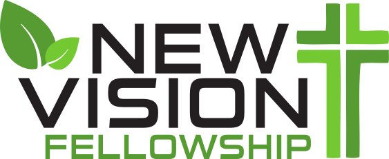
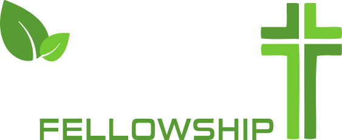
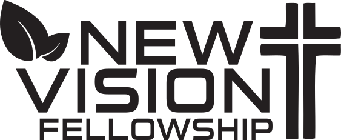
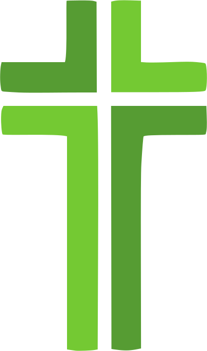

nvf.life / brand
Brand Kit
Everything an agent or a designer needs to produce work that looks and sounds like New Vision Fellowship — colors, typography, logos, frameworks, and voice. Structured for machines, readable by people.
Download Complete Brand Kit .zip · v2026.08.3Agent Instructions
Start with brand-kit.json
It contains all structured brand data in a single machine-readable file. For tone, logo usage, and writing rules, read brand-guidelines.md. All asset paths in the JSON are relative to the repository root — resolve them against base_url.
When producing branded output, use Brand Leaf Green (#5f9a32) as the primary color on light backgrounds and Green Bright (#74ca33) on dark ones — these are the canonical application-palette greens for layouts, backgrounds, accents, and new materials. Official logo artwork carries its own, separately-set green(s) baked into each file (see each asset's colors field) — those do not need to match this palette and must never be edited to match it. Before pairing any color with text, check color_system.accessibility.pairings. Set headings in Archivo and body copy in Source Serif 4, and follow the voice object. Logos are SVGs in logos/ — prefer the stacked lockup in most contexts.
Never invent service times, event details, staff names, contact information, or statistics — see ai_content_rules. Never redraw, recolor, or AI-recreate a logo — see governance.logo_modification_policy. For any generated imagery, see ai_imagery.
Repository
Key Files
Brand Kit
Machine-readable brand data. Colors, typography, logo paths, sub-brands, frameworks, voice, and print specs. Start here.
Brand Guidelines
Human- and agent-readable guidelines covering voice, color rules, logo usage, design patterns, minimum sizes, and print specifications.
Logo Files
The stacked lockup, horizontal wordmark, and leaf mark — each in color, white, and black variants. SVG preferred.
Ministry Logos
Our six population-focused ministries — the Wheel, the Kiln, the Mill, Titus 2 Women, Men of Vision, and Vintage Visions.
Initiative Logos
Life Groups and Who’s Your One, including a white variant for use on dark backgrounds.
Downloads
Get the Whole Kit
Every file in this kit is versioned together. The ZIP below is the fastest way to get everything at once; the individual files are here too if that’s all you need.
Complete Brand Kit
JSON, schema, guidelines, CSS tokens, README, and every distributable NVF logo, ministry, and initiative asset. No fonts, no outside-partner logos.
brand-kit.json
JSON Schema
| Key | Description |
|---|---|
brand | Name, mission, vision, website, founding year, and denominational affiliations. |
locations | Campus address, email, and phone. |
core_values | The five core values, in canonical order. |
frameworks.on_ramps | The four On-Ramps — Gather, Give, Group, Go — each with its color, summary, and URL. Includes the canonical presentation order. |
frameworks.clay_stages | Clay in the Potter’s Hands — the five growth stages, each with its color, transition, and what it multiplies. |
color_system.palette | Primary, secondary, and neutral colors with RGB, text_on, usage notes, and tonal variations. These are the canonical application-palette colors — distinct from, and not required to match, the colors embedded in official logo artwork. |
color_system.accents | Four earthy accent colors — Moss, Teal, Ochre, Terracotta — for differentiating categories. Never extend beyond these. |
color_system.accessibility | Verified WCAG AA contrast ratios for every meaningful text/background pairing, each classified normal, large-only, decorative-only, or prohibited. |
color_system.interactive | Brighter greens, an alert red, and lifted badge colors for on-screen product UI only — never print. |
typography | Archivo, Source Serif 4, and Kaushan Script with weights, usage rules, a full size scale, minimum sizes, and a font-source license note. |
logos.lockups | Stacked, horizontal, leaf mark, and cross mark — each with an assets[] array carrying format, pixel dimensions, transparency, scalability, and approved background. |
logos.rules | Clearspace, variant selection, and prohibitions. |
sub_brands | Seven ministries, each with audience, website, and logo assets with full format metadata. |
initiatives | Life Groups and Love My Neighbor Day, with descriptions and assets. |
outside_partnerships | Denominational and adopted-initiative partners we did not design — text and links only, no local logos. |
governance | Brand steward, review date, permitted-use policy, logo-modification policy, approval thresholds, and copyright. |
voice | Summary, a short writing statement, tone descriptors, ten dos, ten don’ts, and example phrases. |
ai_content_rules | What an AI agent must never invent, how to handle missing information, Scripture-translation rules, and human-review triggers. |
brand_elements | Specs for the kicker lockup, cards, contrast columns, image veil, road motif, and timeline. |
photography | Mood, lighting, motifs, composition, and subject tone for any photo, video still, or AI-generated image. |
ai_imagery | Disclosure, consent, and never-do rules specific to AI-generated or materially AI-altered images. |
digital_signage | Typography, layout, background motifs, and motion rules for the roadside sign, Sunday slides, and select social posts. |
print | Body-copy point range. No fixed trim, bleed, resolution, or color mode — ask the printer for each job's requirements. |
rules | Top-level directives for agents consuming this kit. |
Colors
Brand Colors
Dark, dramatic moments plus light, readable content. Everything is warm — never pure black, never pure white, never a cold gray.
Greens
Primary and Bright are the canonical application-palette greens — for layouts, backgrounds, accents, and new materials. Official logo artwork carries its own, separately-set green(s) baked into each file; those don't need to match this palette and are never edited to match it.
Warm Neutrals
Accent Colors
On a colored card, only large display text (like the name above) is guaranteed to pass WCAG AA in every color — smaller text sits in a light chip instead of directly on the fill. See color_system.accessibility for the full pairing table.
Text-Safe Variants
Moss and Ochre themselves fail WCAG AA as small text on Paper. Use these darker tones instead — the same relationship Green Deep has to Brand Leaf Green.
Digital / Interactive — UI Only
Brighter, higher-chroma variants for on-screen product UI only — buttons, links, hover states, and badges on very dark app-like screens, as used on my.nvf.life. Never use these in print or static compositions.
Typography
Three Families, Three Jobs
text-wrap: pretty. Georgia is the fallback.Fonts are provided by their respective sources. Follow the source’s current terms when downloading or distributing them.
Assets
Logos
The stacked lockup is our primary logo. Match the variant to the background — the charcoal wordmark will not read on dark, and the white wordmark will not read on paper. Prefer SVG everywhere.











Horizontal Wordmark Variants
All flat, no cross. Vary by whether the wordmark is single-color or keeps the green leaf accent.


Imagery
Photography & Imagery
Direction for any photograph, video still, or AI-generated image — a booklet cover, an announcement slide, a web hero, anything. Not scoped to one project.
Mood & Lighting
Warm, cinematic, editorial — grounded, hopeful, and premium, like a well-made print piece. Golden-hour warmth and soft natural light, with a gentle film grain. Slightly desaturated, warm-leaning color grade. Charcoal shadows, never crushed to pure black. Cinematic but understated — no HDR, no harsh contrast.
Motifs
Road
A winding or open road — the journey of faith. The same idea as the road motif, carried into photography.
Leaf & New Growth
A single leaf or a fresh sprout, echoing the leaf mark — visual shorthand for growth.
Pottery & Clay
Earthen vessels, hands shaping or holding clay, kiln-fired pottery — our picture of formation, from Isaiah 64:8. The vessel and the material carry the meaning; a literal potter’s wheel in motion is not required.
Hands
Open, giving, or raised in worship.
Community
People gathered, walking together, going out into neighborhoods and nations — Acts 2:41–47.
Composition
Clean and minimal, with generous negative space and a strong focal subject at shallow depth of field. When a shot will carry a text overlay, keep roughly a third of the frame open and darker for it.
Subject Tone
Real, candid, diverse, and intergenerational people — never stocky, staged, or generic stock photography. Authentic worship, service, and hospitality. Reverent and joyful, never cheesy.
AI-Generated Imagery
Follow the direction above for any AI-generated image, too. Disclose AI use whenever a viewer might mistake it for a real New Vision person, event, or facility. Never depict a generated person as an actual member, guest, or staff member, and never use AI to redraw or recreate a logo. Full rules in ai_imagery.
Imagery
Digital Signage & Motion
A high-impact, read-from-a-distance visual language born on the roadside sign, that also carries to Sunday presentation slides (1920x1080) and, for some announcements, Facebook/Instagram posts. Not the definitive design for slides or social — just one strong, on-brand option for them.
Extended Dark Shades — Signage Only
Typography
Archivo at 900 weight is the default — uppercase, tight line spacing, strong left alignment, never thin. For an even more condensed, distance-legible headline, Anton, Bebas Neue, League Spartan, Montserrat ExtraBold, Oswald Heavy, or a Druk-style face are approved for this family of formats only. Off-white text on dark; green for emphasis words only.
Layout
Shared feel across formats: dominant text, one photo, a dark gradient for legibility, generous negative space. The exact split adapts per canvas, not forced to one ratio.
Roadside sign — roughly 2:1. Left 55–65% headline, right 35–45% photo, gradient left to right.
Sunday slides — 1920x1080. Same feel on a widescreen frame — e.g. full-bleed photo with a gradient veil, or a top/bottom split.
Social posts — select Facebook/Instagram announcements only, adapted to that canvas, not every post.
Background Motifs
A large, very faint two-leaf shape in dark green or olive; a soft green gradient glow; thin green accent lines; subtle dust or grain texture; an occasional very faint hexagon pattern; a warm vignette; charcoal paper texture.
Motion
Text enters word-by-word with a quick scale-up-and-settle stomp, 0.4–0.8s total. Leaf motif slides in from the left, photo from the right, with light parallax and one green accent sweep. Never animate the people themselves — no bouncing, spinning, or excess.
Assets
Ministries & Initiatives


Partnerships
Outside Ministries & Partnerships
Organizations and initiatives we participate in, support, or have adopted for our own context — unlike the ministries above, we did not design these or their creative. Use each organization’s own official logo and brand assets from its resources link; never reproduce them here.
International Mission Board
The SBC’s international missions-sending agency.
North American Mission Board
The SBC’s North American missions and church-planting agency — originator of Who’s Your One.
Triad Church Network
A local network of churches we partner with in the Triad region.
Who’s Your One?
From NAMB. Identify one person far from God, pray for them, share the gospel, invite them to church. We participate and shape the approach for our context; we did not design this initiative or its creative.
ServeNC
From NC Baptists. A statewide day of coordinated community service projects. We participate and adapt it locally; NC Baptists design the creative.
Voice
How We Sound
Write like a trusted friend who is a little further down the road: warm, direct, unhurried. We invite people in — we never recruit, pressure, or hype.
Do
- Write to “you” in active voice
- Choose the shorter, plainer word
- Be specific — real names, real numbers
- Say hard truths kindly and plainly
- End with one concrete next step
- One warm flourish per piece
Don’t
- No urgency or FOMO
- No hype words — amazing, life-changing
- No corporate speak — leverage, utilize
- No insider shorthand used cold
- Never imply anyone is behind or failing
- Never substitute superlatives for evidence